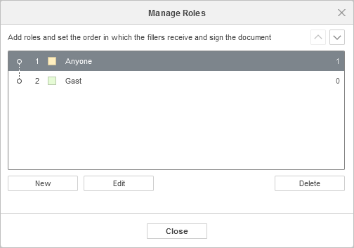
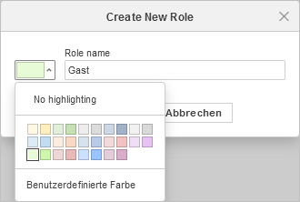

Verwalten von Empfängern
Sie können neue Empfänger erstellen, die bestimmen, wer bestimmte Formularfelder ausfüllen kann.
Um die Empfänger zu verwalten,

- gehen Sie zur Registerkarte Formulare in der oberen Symbolleiste,
- klicken Sie auf das Symbol Empfänger verwalten,
-
klicken Sie auf die Schaltfläche Neu, um einen neuen Empfänger zu erstellen,

- geben Sie den Namen des Empfängers ein und wählen Sie bei Bedarf die Farbe aus. Sie können auch eine benutzerdefinierte Farbe erstellen, indem Sie auf den entsprechenden Menüpunkt klicken,
- klicken Sie auf OK, um einen neuen Empfänger zu erstellen,
- legen Sie die Reihenfolge fest, in der die Ausfüller das Dokument erhalten und unterschreiben. Verwenden Sie dazu die Schaltfläche und ,
- verwenden Sie die Schaltflächen Bearbeiten oder Löschen, um die Empfänger zu ändern oder zu löschen,
- klicken Sie auf Schließen, um zur Formularbearbeitung zurückzukehren.
Um das Hinzufügen neuer Felder zu vereinfachen, können Sie die Empfängerrolle, für die Sie ein Feld hinzufügen möchten, vorher auswählen:
- Wählen Sie die gewünschte Empfängerrolle aus dem Dropdown-Menü im Abschnitt Felder einfügen für in der oberen Symbolleiste aus.
- Sie können direkt eine neue Empfängerrolle erstellen, indem Sie auf den Menüpunkt Empfänger hinzufügen klicken. Die Liste der Empfängerrollen entspricht derjenigen, die Sie gemäß den obigen Anweisungen verwalten.
Wenn Sie das Formular als .pdf-Datei speichern, können Sie alle für das Formular erstellten Empfängern anzeigen.